Java基础知识点汇总
0. Java语言特性
- 简单易学
- 具有面向对象三大特性：继承、封装、多态
- 平台无关性（由JVM虚拟机实现与平台无关）
- 可靠性
- 安全性
- 支持多线程
- 支持网络编程
- 编译与解释并存
- 与C++相比：
- 都是面向对象的语言，都支持继承封装多态
- Java不提供指针来直接访问内存，更加安全
- Java支持单继承，C++支持多重继承，但是Java中接口支持多重继承
- Java有自动内存管理机制，不用程序员手动释放无用内存
1. 面向对象和面向过程区别
- 面向对象：易复用、易维护、易扩展。因为面向对象有继承、封装、多态的特性，实现的代码的低耦合度，使系统更加灵活、便于维护。
- 面向过程：性能要比面向对象高。因为类的调用需要实例化，消耗资源。所以当性能是首要选择的时候，我们常常选择面向过程开发。如单片机、嵌入式等。
- 总结：面向对象低耦合便于维护、易复用、易维护，但是性能没有面向过程高。
2. 面向对象的三大特性
- 继承：
- 是什么：继承是以已有的类为基础，扩展新类的技术。新类可以增加新的数据或者新的功能，他也可以复用父类的功能，但是不能选择性的继承父类，要继承父类的全部。
- 有什么用：通过使用继承我们可以很方便的复用以前的代码。
- 总结：
- 子类拥有父类的所有方法和属性，包括私有的方法和属性，但是私有的方法和属性子类无法直接调用，需要父类提供特定的方法去调用。
- 子类可以有自己的属性和方法。实现对父类的扩展。
- 子类可以用自己的方式实现父类的方法。即使用对父类方法的重写。
- 封装：把一个对象的属性进行私有化，然后提供可以被外界访问的属性的方法。典型就是实体类的标准JavaBean。
- 多态：
- 什么是多态：就是多种形态，具体来说就是同一件事情，发生在不同对象身上，就会产生不同的结果。
- 多态实现条件：
- 继承体系下
- 子类对父类方法的重写
- 通过父类的引用调用重写的方法
- 多态的体现：在代码运行的时候，传递不同类对现象的时候，会调用对应类中的方法
public class Main { public static void main(String[] args) { //向上转型 Animal dog = new Dog(); dog.eat(); // dog.dogShow;//编译看左边 在编译的时候animal类没有.dogShow方法，编译就会报错 Animal cat = new Cat(); cat.eat(); // cat.catShow; //结论：编译看左边，发生向上转型的时候只能调用父类有的成员和方法，不能调用子类特有的 //向下转型 Animal animal = dog; Dog dog1 = (Dog) animal;//animal本来就是dog，所以强制转换后不会抛出异常； // Cat cat1 = (Cat) animal;//强制将狗转换成猫，运行时抛出异常：ClassCastException //引入instanceof对类型进行判断，如果安全则为true if (animal instanceof Cat){ Cat cat2 = (Cat) animal; cat2.catShow(); } if (animal instanceof Dog){ Dog dog2 = (Dog) animal; dog2.dogShow(); } //sout //吃骨头 //吃猫粮 //汪汪汪 } } class Animal{ public void eat(){ System.out.println("吃饭"); } } class Dog extends Animal{ @Override //@Override重写注解，用于对重写的方法进行检查，重写的方法名返回值和方法的参数列表一定要相同，且对访问修饰符不能做更严格的限制。 public void eat() { System.out.println("吃骨头"); } public void dogShow(){ System.out.println("汪汪汪"); } } class Cat extends Animal{ @Override public void eat() { System.out.println("吃猫粮"); } public void catShow(){ System.out.println("喵喵喵"); } }- 重写涉及到动态绑定机制：
- 静态绑定(前期绑定):编译器在编译的时候就可以确定调用的方法
final、static、private修饰的方法和构造函数为静态绑定 - 动态绑定(后期绑定):编译器在运行时才可以确定调用的方法
- Java动态绑定机制
- 当调用对象方法时，该方法会和该对象的内存地址绑定。
- 当调用对象属性时，没有动态绑定，哪里声明哪里使用。
- 动态绑定的发生条件：
- 向上转型
Animal dog = new Dog(); - 重写
class Dog extends Animal{ @Override public void eat() { System.out.println("吃骨头"); } } - 通过父类引用调用子类重写的父类方法。
dog.eat();
- 向上转型
- 静态绑定(前期绑定):编译器在编译的时候就可以确定调用的方法
- 向上转型特点：
- 可以调用父类里的所有成员
- 不能调用子类所特有的成员和方法。
- 运行时要看子类的具体表现，也就是子类所重写的父类方法。然后调用。
- 优点：让代码实现更加简单灵活。
- 缺点：不能调用子类所特有的成员和方法。
- 向下转型特点：
- 向下转型本质是在堆上创建了一个子类的对象赋值给父类的引用然后在回到子类的引用，可以使用子类所特有的方法。
- 因为在对上创建的子类对象不同，所以在最后回到子类的引用的时候可能是不安全的。有可能出现子类猫的堆赋值给了狗的引用，这是不安全的。因此Java引入了instanceof来判断是否安全
if (animal instanceof Cat){ Cat cat2 = (Cat) animal; cat2.catShow(); } - 总结多态优缺点：
- 优点：降低圈复杂度，就是减少大量使用if-else，只需要在父类里定义方法，然后子类重写该方法，最后在使用的时候进行向上转型即可。可扩展能力强，只需创建继承父类的子类然后在重写方法即可。对于调用者来说只要创建新类的实例就可以了。
- 缺点：代码的运行效率低。属性没有多态，当父类和子类有同名的属性时，通过父类引用，只能引用到父类的成员属性。构造方法没有多态。
3. 抽象类
- 是什么：类中存在仅定义而未实现的方法
- 类中只要包含仅定义的方法均为抽象类
- 若子类未实现父类的全部方法，则也需要定义为抽象类
- 抽象类不可实例化
- 抽象类的定义格式
class abstract 类名 extends 父类{
权限修饰符 属性1
权限修饰符 属性N
权限修饰符 类名1//构造器
权限修饰符 类名N
权限修饰符 方法1
权限修饰符 abstract 方法N
}
* 可以通过<font color="red">default</font>指定默认的实现方法
* 抽象类可以定义多个不需要实现的方法（用abstract修饰）
* 可以定义抽象类型的变量
4. 接口
- 定义：只有定义没有方法体的方法和全局常量组成的类。
- 接口的特性：
- 接口不可以被实例化，接口中不能有构造方法。
- 不可在接口里定义变量，接口里的变量都自动被
public static final修饰 - 接口里的方法都自动被
public abstract修饰，即接口中所有的方法都是抽象方法。 - 接口的实现类必须实现接口的全部方法，否则必须定义为抽象类
- 作用：实现多重继承的效果，同时避免复杂度和低效性。
- 接口的定义
访问修饰符 interface 接口名 extends 父接口1,父接口2,...{
常量
方法
default 方法N(参数){
//提供默认实现方法
}
}
- 接口的实现
访问修饰符 class 类名 extends 父类名 implements 接口1,接口2,...{
自定义程序
实现接口方法
}
- 类可以同时实现多个接口，如果接口有冲突，需要在类里解决
- 如果父类继承的方法和接口的方法冲突则默认接口的方法被省略
- 接口规范（SPI）：接口和实现类的解耦
- 本质：应用程序根据接口调用实现类
- 实现徐奥引入依赖的
java.util.ServiceLoader - SPI需遍历并加载所有的实现类（无法做到按需加载）
- SPI调用流程

- 接口优点：
- 可实现一个类多个接口，打破了类继承的局限性
- 对外提供规则接口
- 降低了程序的耦合性，可实现模块化开发，定义好规则，提高了开发的效率
5. 抽象类和接口的区别
- 共性：不断抽取共性，没有具体的实现方法，都不能实例化。
- 区别
- 接口没有构造方法，抽象类有。
- 接口是对行为的抽象，是行为规范。抽象类是对类的抽象，是一种模板设计。
- 接口不能有具体的方法体，java1.8中可以定义default默认方法体，抽象类中可以有抽象方法也可以有普通带方法体的方法。
- 接口的实现类可以多接口实现，抽象类只能单继承。
- 接口成员变量和方法默认会被修饰，抽象类中有普通的方法，必须有被abstract修饰的抽象方法。
JVM知识点
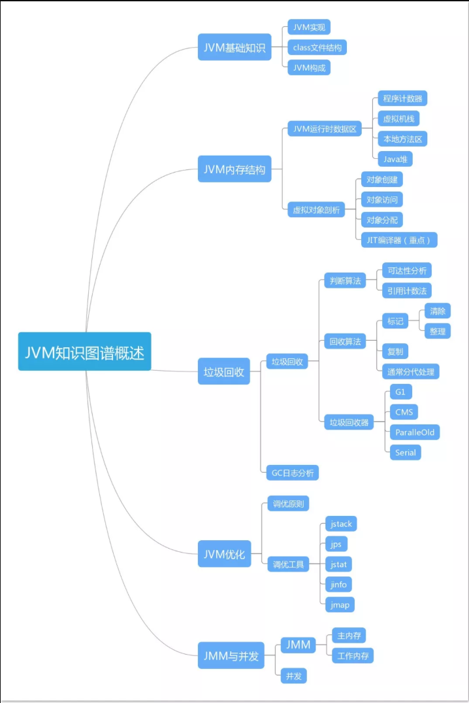
1. JVM基础知识
1. JVM类文件结构
- Java程序(.java)通过Java编译器(javac)编译成字节码文件(.class)以供Java虚拟机(JVM)解释成计算器可以识别的语言。
- .class字节码文件是不同语言在Java虚拟机沟通的桥梁，同时也是Java可以跨平台的重要原因

- 字节码文件结构

- 魔数
- 确定一个文件是否是可以被JVM接收的Class文件
- 版本号（副版本号、主版本号）
- 在实际开发中开发和生产的JDK环境要一致
- Java虚拟机可以执行低版本编译器生成的Class文件，反之不行
- 常量池（常量池计数器、常量池数据区）
- 常量池计数器
- 访问标志
- 类索引
- 父类索引
- 接口（接口计数器、接口数据区）
- 字段（字段计数器、字段数据区）
- 方法（方法计数器、方法数据区）
- 属性（属性计数器、属性方法区）
- 魔数
2. Java类的加载机制
- 作用：实现从二进制的数据文件到JVM虚拟机的内存中以供使用
- 加载过程：加载、连接、初始化
- 在类的加载过程中需要遵守JVM规范实现。
类的生命周期

-
加载：将源码转换为JVM字节流
- 通过全限定名获取对应类的二进制字节流
- 把二进制字节流的静态存储结构转换为方法区的运行时数据结构
- 在堆中创建代表这个类的
Java.lang.Class对象，作为方法区的运行时数据结构的访问入口。
-
验证：验证获取的字节流是否符合JVM规范
- 文件格式：验证字节流是否符合Class文件格式规范。
- 元数据：分析字节码语义是否符合Java语言规范。
- 字节码：分析控制流和数据流，确保语义合法符合逻辑。
- 符号引用：验证类合法性，确保解析能正常执行。
-
准备：为类的静态变量分配内存，初始化为默认值
- 为被
static修饰的静态变量在方法区中分配内存 - 被分配内存的静态变量默认设置初始值为零值（0，0L，null，false等），在初始化阶段才去赋值。
- 如果类字段的字段属性中存在
ConstantValue属性也就是，变量被static和final修饰，则一定要在准备阶段进行赋予ConstantVa属性的指定的值。
- 为被
-
解析：JVM将常量池中的符号引用转换为直接引用
- 作用：将类中特定的符号标记转换为实际储存的地址信息
- 解析主要针对：类、接口、字段、类方法、接口方法、方法类型、方法句柄、调用点限定符
符号引用：用特定的符号来描述目标
直接引用：直接指向目标的指针、定位目标的句柄
-
初始化：JVM对类变量进行初始化，静态变量赋予初始值。
- JVM初始化步骤：
- 如果类没有被加载、连接，则先对类进行加载、连接。
- 如果该类的直接父类没有被初始化，则先初始化直接父类。
- 如果有初始化语句，则顺序执行初始化语句。
- 执行初始化方法（clinit()方法）
- clinit()方法线程安全，多线程下存在堵塞风险。
- clinit()方法是编译器自动生成的。
- JVM初始化的触发条件：
- 创建类的实例，new操作
- 直接父类没有初始化先初始化直接父类
- 调用类或接口的静态变量或者对静态常量的赋值
- 调用类的静态方法
- 反射
- Java虚拟机设置默认启动类的类
- JVM初始化步骤：
-
卸载：将字节流对象回收GC
- 回收类中所有实例化对象
- 回收类的ClassLoader
- 回收没有被对象引用的类
类加载器（ClassLoader）:实现类的加载
- 本质：将源码转化为JVM中的字节流
- 每一个类都有对应的ClassLoader
- 数组类通过JVM创建，获取ClassLoader会基于元素的数据类型判断
- ClassLoader加载类的流程

- BootstrapClassLoader（启动类加载器）: 加载JDK内部核心库
- ExtClassLoader（扩展类加载类）：加载JDK扩展库
- AppClassLoader（应用程序类加载器）：用户类路径（ClassPath）所指定的类
- BootstrapClassLoader是由C++实现的属于虚拟机的一部分，无法Java程序直接引用。其他类加载器都是继承自
java.lang.ClassLoader抽象类，这些类加载器需要由启动类加载器加载到内存中后才能去加载其它类。 - 自定义ClassLoader需要实现loadClass()或findClass()：
- loadClass()：加载指定二进制名称的类（打破双亲委派机制）
- findClass()：查找指定二进制名称的类
- 双亲委派：当ClassLoader加载时先交给其父加载器加载。最终由BootstrapClassLoader加载，如未找到再往下尝试加载类。
- 所有的ClassLoader都要遵循双亲委派（BootstrapClassLoader除外）
- 父ClassLoader不仅尝试加载类，还会查找相关类的相关资源
- 双亲委派不是强制约束，仅时JDK建议的方式
- 优点：
- 避免类被重复加载和核心库被修改
- 通过责任链设计模式实现类加载器的高扩展和解耦性。
2. JVM内存结构
运行时数据区
Java虚拟机在执行Java程序的过程中会把它管理的内存划分成不同的数据区域。
JDK 1.8和之前版本略有不同。
JDK 1.8之前：
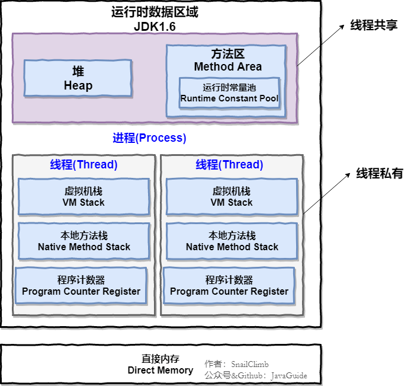
JDK 1.8：
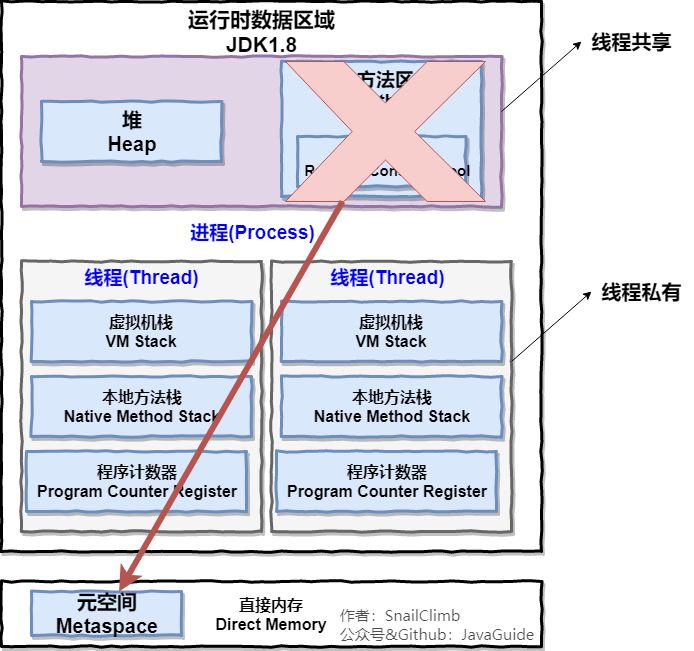
线程私有：
- 程序计数器
- 本地方法栈
- 程序计数器
线程共享：
- 堆
- 方法区
- 直接内存
程序计数器
- 字节码解释器通过改变程序计数器依次读取指令，从而实现代码的流程控制。
- 在多线程下，程序计数器记录当前线程的执行位置，当进行线程切换，再切换回来的时候，通过程序计数器可以继续当前线程的工作。
虚拟机栈
执行Java方法，生成栈帧用于储存局部变量表，操作数栈，常量池引用等。
本地方法栈
虚拟机使用到的 Native 方法服务。
堆
用来储存对象实例和数组。
同时也是GC垃圾回收的主要管理区域。
方法区
可认为是堆的一部分，在JDK1.8的时候合并在直接内存的元空间里。
用来储存已经被虚拟机加载的信息，常量、静态变量、即时编译器编译后的代码。
运行时常量池
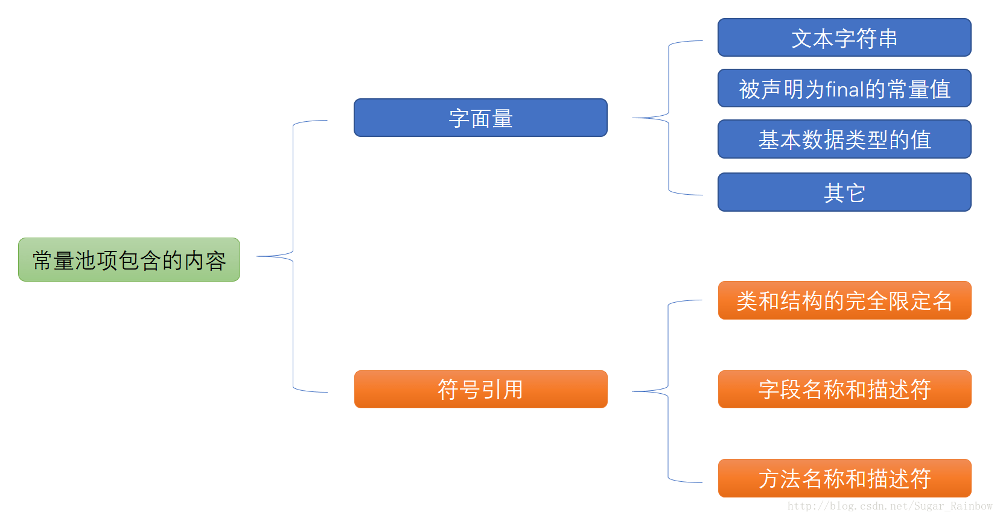
运行时常量池是方法区的一部分，JDK1.8的时候从方法区移出，放到堆内存中。
直接内存
本机直接分配的内存，会受到本机总内存大小的限制。直接内存并不是虚拟机运行时数据区的一部分，但是也经常被使用。
虚拟机创建对象全过程
对象的创建
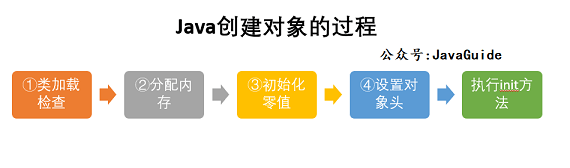
类加载器检查
虚拟机收到new指令，首先去常量池中查找有无对应的符号引用以及符号引用所代表的类是否被加载、解析、初始化过。如果没有，要先进行类的加载过程。
分配内存
在堆内存中为其分配内存空间。
分配方式有两种：
- 指针碰撞
- 空闲列表
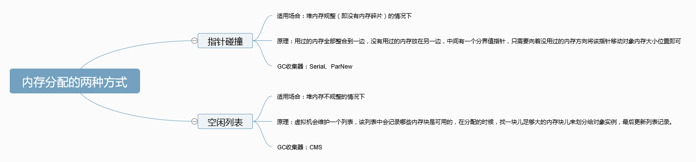
选择哪种分配方式由Java堆是否规整决定，Java堆是否规整由垃圾收集器是否带有压缩功能决定。
初始化零值
内存分配完成后，虚拟机需要将分配到的内存空间初始化为零值，这样在对象实例化字段没有赋初始值的时候，也可以被程序访问到对应的零值。
设置对象头
虚拟机要堆对象进行必要的设置，例如对象时哪个类的实例、对象的哈希码、GC分代年龄信息等。这些信息存放在对象头中。
执行init方法
以上步骤执行完成后，从虚拟机角度看完成了对象的创建，但是从Java程序角度看，对象创建才刚刚开始。init字段没有执行，所有字段都还为零值。在new之后执行init方法，把对象按照程序员意愿初始化，才算对象完成创建。
对象的内存布局
对象内存分为三部分：对象头、实例数据、对齐填充
- 对象头：对象头分为两部分
- 储存自身的自身运行时数据（哈希码、GC年龄、锁状态等）
- 类型指针，通过指针确定对象是哪个类的实例
- 实例数据：对象真正储存的有效数据
- 对齐填充：占位作用（对象头必须为8字节的整数倍）
对象的访问定位
对象的访问方式由虚拟机决定，有两种：
- 句柄：在Java堆中划分内存作为句柄池。拥有稳定的句柄池地址。
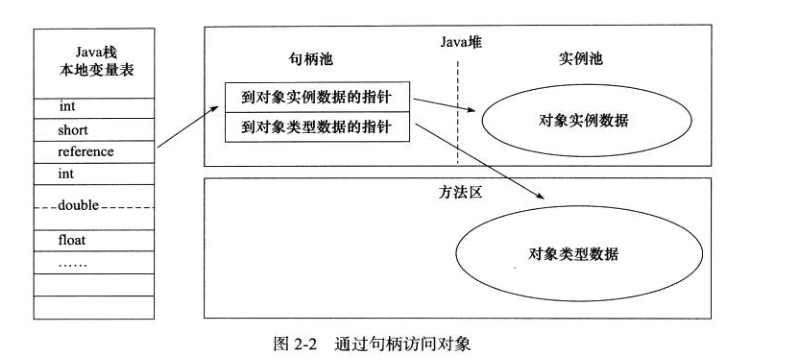
- 直接指针：包含在对象实例数据里。拥有较快的访问速度。
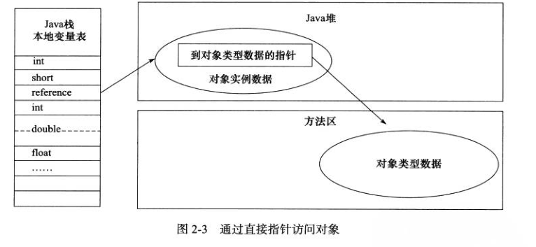
重点补充
String和常量池
String str1 = "abcd";//先检查字符串常量池中有没有"abcd"，如果字符串常量池中没有，则创建一个，然后 str1 指向字符串常量池中的对象，如果有，则直接将 str1 指向"abcd""
String str2 = new String("abcd");//堆中创建一个新的对象
String str3 = new String("abcd");//堆中创建一个新的对象 System.out.println(str1==str2);//false System.out.println(str2==str3);//false
String创建方式有两种：
- 方式是在常量池中拿对象；
- 方式是直接在堆内存空间创建一个新的对象。
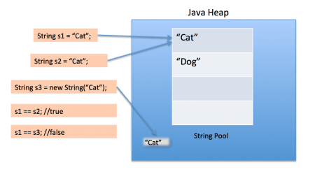
只要new就创建新的对象（新的内存地址）
String s1 = new String("计算机");
String s2 = s1.intern();
String s3 = "计算机";
System.out.println(s2);//计算机
System.out.println(s1 == s2);//false，因为一个是堆内存中的 String 对象一个是常量池中的 String 对象，
System.out.println(s3 == s2);//true，因为两个都是常量池中的 String 对象
- 双引号声明的String，直接储存在常量池中
- new 声明的String，先从常量池中查有无，如有则直接在堆空间创建。如无则现在常量池中创建，再在堆空间创建。
字符串拼接：
String str1 = "str"; String str2 = "ing";
String str3 = "str" + "ing";//常量池中的对象
String str4 = str1 + str2; //在堆上创建的新的对象
String str5 = "string";//常量池中的对象
System.out.println(str3 == str4);//false
System.out.println(str3 == str5);//true
System.out.println(str4 == str5);//false
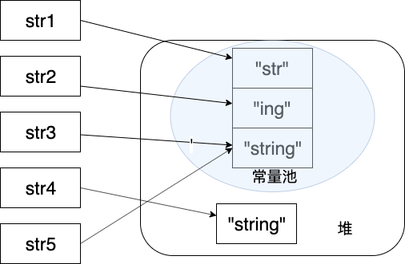
字符串拼接优先使用StringBuild和StringBuffer
8种基本数据类型的包装类和常量池
- Java基本类型的包装类大部分都实现了常量池技术，即Byte,Short,Integer,Long,Character,Boolean；这五种包装类默认在常量池创建了[-128,127]区间的缓存数据。
- 两种浮点数类型的包装类Float,Double并没有实现常量池技术。
Integer i1 = 33;
Integer i2 = 33;
System.out.println(i1 == i2);// 输出 true
Integer i11 = 333;
Integer i22 = 333;
System.out.println(i11 == i22);// 输出 false
Double i3 = 1.2;
Double i4 = 1.2;
System.out.println(i3 == i4);// 输出 false
示例：
Integer i1 = 40;
Integer i2 = 40;
Integer i3 = 0;
Integer i4 = new Integer(40);
Integer i5 = new Integer(40);
Integer i6 = new Integer(0);
System.out.println("i1=i2 " + (i1 == i2)); //true
System.out.println("i1=i2+i3 " + (i1 == i2 + i3)); //true
System.out.println("i1=i4 " + (i1 == i4)); //false
System.out.println("i4=i5 " + (i4 == i5)); //false
System.out.println("i4=i5+i6 " + (i4 == i5 + i6)); //true
System.out.println("40=i5+i6 " + (40 == i5 + i6)); //true
解释：
语句 i4 == i5 + i6，因为+这个操作符不适用于 Integer 对象。
首先 i5 和 i6 进行自动拆箱操作，进行数值相加，即 i4 == 40。
然后 Integer 对象无法与数值进行直接比较，所以 i4 自动拆箱转为 int 值 40，最终这条语句转为 40 == 40 进行数值比较。
3. 垃圾回收——GC机制
什么是GC：GC是一种自动的存储管理机制，当程序分配内存使用完成后，这部分内存就会成为垃圾，需要释放。这种存储资源管理就称为垃圾回收。对于Java而言就是，自动进行垃圾回收的机制。
什么是JVM垃圾回收
Java的自动内存管理主要是针对对象的内存分配与回收。
核心功能：堆内存中对象的内存分配与回收。
Java堆是垃圾收集器管理的主要区域，也被称为GC堆。
垃圾收集器采用分代垃圾收集算法，把Java堆细分为新生代和老年代。再次细分为Eden空间、From Survivor、To Survivor 空间等。
进一步划分的目的是更好地回收内存，或者更快地分配内存。
堆的基本结构：
- 新生代：eden 区、s0(“From”) 区、s1(“To”) 区
- 老年代：tentired 区
在一次新生代垃圾回收后，如果对象依旧存活，则会进入s1，年龄+1(Eden 区->Survivor 区后对象的初始年龄变为 1)
当年龄到一定程度(默认15岁), 晋级到老年代
经过这次GC，eden区和From区被清空，然后From区和To区交换角色。
不论怎么样，都会保证新的To区域是空的，然后当To区被填满，所有To区对象转入老年代。
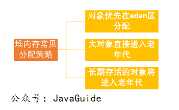
对象优先分配在eden区
主流的垃圾回收器都采用分代回收算法，因此需要将堆内存分为新生代和老年代。根据年代特性选择相应的垃圾收集算法。
多数情况下，对象分配在eden区分配，当eden区没有足够空间分配的时候，虚拟机将发起一次MinorGC。
Minor GC 和 Full GC 有什么不同呢？
- 新生代GC
Minor GC：新生代的垃圾收集动作，非常频繁，回收速度较快- 老年代GC
Full GCMajor GC： 老年代的垃圾收集动作，出现Major GC 绝大多数情况下会出现一次Minor GC，Major GC速度比Minor GC 慢10倍以上
分配担保机制：
有一个对象1占据了大部分的eden区，对象2在eden区没有足够的内存分配。
虚拟机将发起一次Minor GC。GC期间发现对象1太大了无法存入Survivor区。
通过分配担保机制直接把对象1转移到老年代，老年代区有足够的空间存放对象1，所以不会出现Full GC。
大对象直接进入老年代
大对象：在内存上大量连续储存的对象（如字符串、数组）
为什么直接进入老年代：
因为大对象会占据大部分eden区，触发分配担保机制进行复制存入老年代区，降低效率。
长期存活的对象进入老年代
虚拟机通过对象年龄计数器判断新生代和老年代。
对象出生就会放在eden区，经过一次Minor GC，如果能够被survivor区容纳，那么年龄初始化为1，然后移入Survivor区。每次Minor GC年龄+1，当年龄增加到一定程度（默认为15岁），移入老年代区。
动态的对象年龄判断
为了更好的适应不同程序的内存情况，虚拟机不是定死必须要达到某个年龄。
当Survivor区相同年龄对象的内存总和大于Survivor区总内存的一半，那么将直接把比这部分对象大或者这部分对象，直接移入老年代区。
对象死亡判断
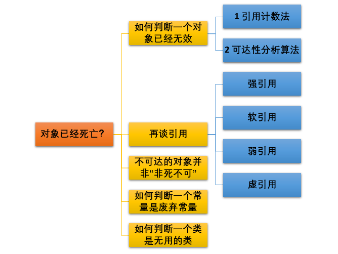
1. 引用计数法
给对象添加一个引用计数器，每当对象被引用计数器+1，引用失效计数器-1。任何时候当计数器为0，则不会再被使用。
简单高效，但是无法处理对象间相互引用的问题。
如，对象1和对象2相互引用，但是除此之外无任何引用。因为引用计数器的值一直不为0，所以引用计数算法没办法通知GC回收器回收他们。
2. 可达性分析算法
引入GC Roots，把每个对象都称为GC Roots，从这个节点开始往下搜索，节点走过的路径称为引用链。当GC Roots没有任何引用链，那么此对象不可用。
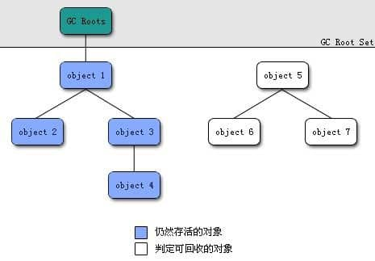
3. 再谈引用
对象存活判断都与 引用 有关。jdk1.2之后对引用进行了分类。
-
强引用
相当于必不可少的生活品。是我们最常用的引用，这种引用绝对不会被虚拟机回收。 -
软引用
相当于可有可无的生活品。内存空间足够，不会回收；内存空间不够，回收对象。可用来实现内存敏感的高速缓存。 -
弱引用
相当于可有可无的生活品。弱引用和软引用的区别在于：弱引用具有更短的生命周期，只要被垃圾回收器发现，不论内存空间是否足够，直接回收。 -
虚引用
形同虚设，在任何时候都可能被垃圾回收器回收。
虚引用主要用来跟踪垃圾回收的活动
程序中软引用用到较多，因为软引用可以加速JVM对垃圾回收器的回收速度，可以维护系统运行安全，防止内存泄漏等问题。
4. 不可达的对象并非“非死不可”
可达性分析后，不可达的对象处于“缓刑阶段”。需要经过两次标记，才会真正死亡。
- 第一次：可达性分析后，不可达的对象被第一次标记，并且进行筛选。筛选条件是对象有无必要执行
finalize方法，当对象没有覆盖finalize方法，或者虚拟机已经执行过一次方法，那么虚拟机认为没必要执行。 - 第二次：被判定为需要执行的对象，放入一个队列里进行第二次标记，如果对象没有任何关连对象，那么就真的被回收。
5. 如何判断一个常量是废弃常量
运行时常量池内主要回收废弃常量。
如何判断：
假设有个字符串常量"abc"，如果没有任何的String对象引用该字符串。那就说明该字符串常量为废弃常量。在下次内存回收的时候，"abc"就会被回收。
6. 如何判断一个类是无用的类
方法区主要回收无用类。
如何判断，满足一下三个条件：
- 该类的所有实例都被回收。
- 加载类的ClassLoader 被回收
- 该类对应的
java.lang.Class没有任何引用，并且没有反射。
垃圾收集算法
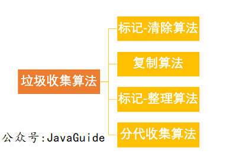
1. 标记-清除算法
分类两个步骤，先标记所有需要回收的对象，然后统一回收对象。
该算法是最基础的算法，后续算法都是依据该算法改善。
带来了两个问题：
- 效率问题
- 回收后，内存会出现大量不连续的碎片空间。
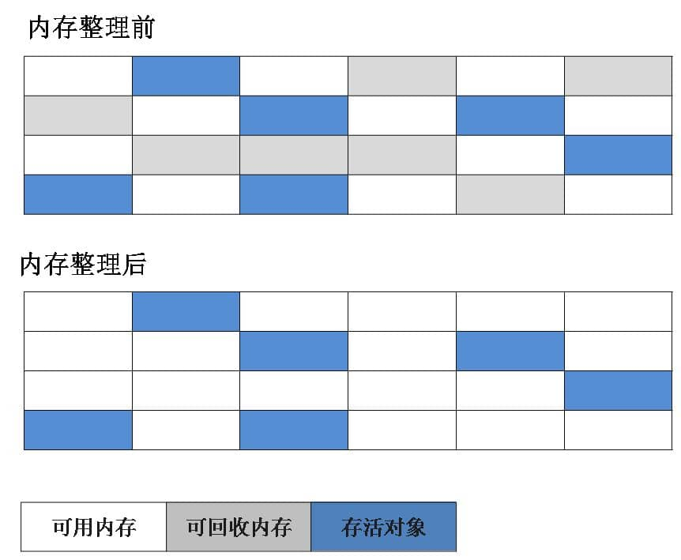
2. 复制算法
为了解决效率问题衍生出的算法。
该算法把内存分为两相等个部分，每次使用其中一部分，当这部分使用完后，将还存活的对象复制到另一部分，接着把这部分空间清空。这样每次回收都是一半内存。
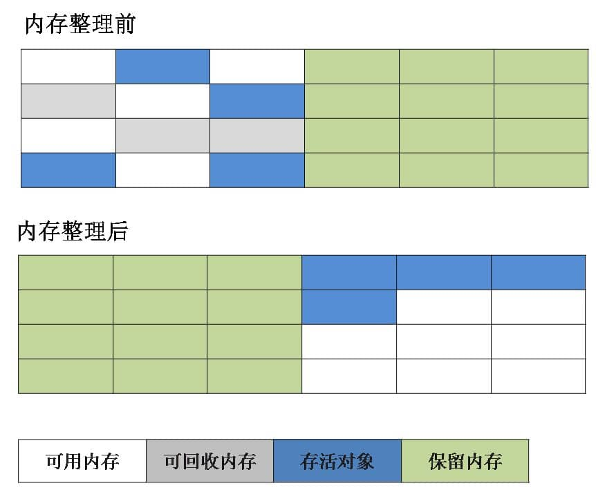
3. 标记-整理算法
根据老年代提出的一种标记算法。
标记过程与标记-清除算法一样，在整理的时候让所有存活的对象向一端移动。接着清理这个端边界以外的内存。
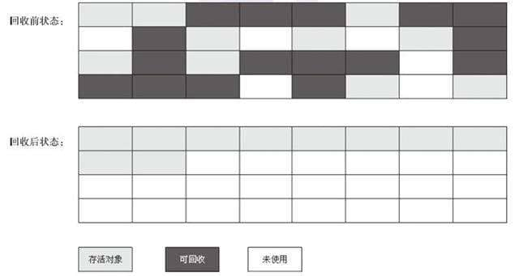
4. 分代收集算法
当前虚拟机的垃圾收集都采用垃圾收集算法。
根据对象的存活周期，划分几个不同的内存块。将java堆分为新生代和老年代，根据年龄特点，选择不同的垃圾收集算法。
如：
- 新生代中：每次收集都会有大量对象死去，所以可以原则复制算法。
- 老年代中：老年代中都是存活率很高的对象，并且没有额外的空间对它进行分配担保，就需要采用标记-清除算法，标记-整理算法。
垃圾收集器
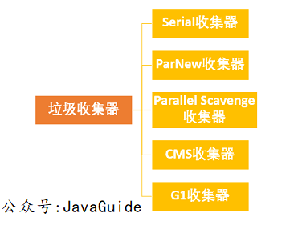
垃圾收集算法是 方法，垃圾收集器是 实现。
没有最好的垃圾收集器，根据场景选择适合的垃圾收集器
1. Serial收集器
Serial（串行）收集器，最基本、久远的垃圾收集器。
单线程收集器。它在垃圾收集工作的时候，必须暂停别的所有工作线程。
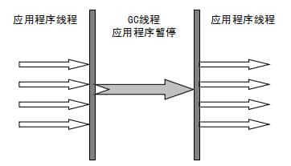
新生代采用复制算法，老年代采用标记-整理算法。
优点：简单高效。
2. ParNew收集器
Serial收集器的多线程版本。算法和它一样。
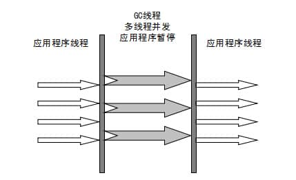
- 并行：多条垃圾收集线程一起处理，用户线程等待。
- 并发：用户线程和垃圾收集线程同时执行，（不一定并行，可能交替），用户程序继续执行，垃圾收集在另外CPU上。
3. Parallel Scavenge收集器
基本和ParNew收集器差不多，但是该收集器更注重吞吐量（高效利用CPU）。
4. Serial Old收集器
Serial收集器的老年代版本。同样是单线程。
5. Parallel Old收集器
Parallel Scavenge收集器的老年版本。
4. CMS收集器
CMS（Concurrent Mark Sweep）收集器以获取最短回收停顿时间为目标的收集器，注重用户体验。
真正意义上的并发收集器，实现垃圾收集线程和用户线程同时工作。
标记-清除算法的实现。分为四个部分：
- 初始标记
- 并发标记
- 重新标记
- 并发清除
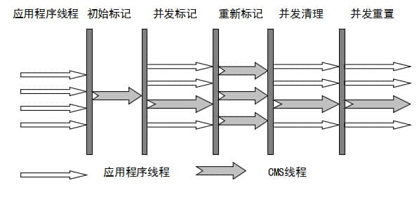
优点：并发处理、低停顿
缺点：
- 对CPU资源敏感
- 无法处理浮动垃圾
- 清除后会出现大量碎片空间。
5. G1收集器
面向服务器的收集器，以极高的概率满足GC低停顿和高吞吐量。
标记-收集算法
特点：
- 并行和并发
- 分代收集
- 空间整理
- 可预测停顿
实现步骤：
- 初始标记
- 并发标记
- 最终标记
- 筛选回收
4. JVM调优
GC性能指标和基本调优策略
GC性能衡量指标
- 吞吐量
- 停顿时间
- 垃圾回收频率
GC调优策略
降低 Minor GC 频率
因新生代空间较小，eden区很快被填满，导致的频繁Minor GC。
通过增大新生代空间来降低Minor GC频率。
因空间增大导致的Minor GC时间增加问题：
通常在虚拟机中复制的成本远大于扫描。
- 如果在堆内存中存在较多的长期存活对象，此时增加新生代空间，由于要复制的存活对象增对，反而会导致Minor GC时间增加。
- 如果堆内存中短期对象很多，那么扩容后，单次Minor GC时间不会显著增加。
所以，单次Minor GC的时长取决于GC后存活的对象数量，而非eden区大小。
降低 Full GC 频率
由于堆内存不足，或者老年代对象太多导致Full GC。
- 减少创建大对象
- 增大堆内存空间
选择合适的GC回收器
当我们以用户体验为第一的时候，一般选择CMS收集器，或者G1收集器。
当我们对吞吐量有要求的时候，可选择Parallel Scavenge回收器来提高系统的吞吐量。
JVM调优实例 1 ：线上CPU100%怎么排查
JVM调优实例 2 ：偏向锁导致Minor GC频繁问题
JVM调优实例 3 ：-Xmm参数设置错误导致的OMM
JVM调优实例 4 ：连接池和Mybatis导致的OMM
多线程
1. 线程和进程
- 进程：进程是程序一次执行的过程，是系统运行的基本单位。系统运行就是一次进程创建运行消亡的过程。
- 线程：线程是比进程更小的执行单位，可多个存在在进程里。线程共享进程的堆内存和方法区，又有自己独立的虚拟机栈，本地方法栈和程序计数器。

- 程序计数器：
- 字节码解释器通过程序计数器来依次读取命令。
- 多线程下，记录当前线程执行到的位置，以便线程切换回来时知道执行到哪里。
- 为什么私有：为了切换回当前线程时恢复到正确的执行位置。
- 虚拟机栈和本地方法栈：
- 虚拟机栈：执行Java方法，生成栈帧用于储存局部变量表，操作数栈，常量池引用等。
- 本地方法栈：虚拟机使用到的 Native 方法服务。
- 为什么私有：为了保证线程中的局部变量不被别的线程访问。
- 堆：储存新创建的对象。
- 方法区：存放编译器编译后的数据，如类信息，常量，静态变量。
2. 并行和并发
- 并行：同一时间点，多个线程同时执行。
- 并发：同一时间段内，多个线程执行（可能不在统一时间点）。
3. 为什么使用多线程：
- 总体：线程是程序执行的最小单位，多线程切换和调度成本远小于进程。多线程执行减少了线程上下文切换的时间。
- 入微：单核多线程可以提高效率，比如当一个线程先要使用cpu再使用IO，另一个线程先使用IO再使用cpu，当两个线程同时进行的时候效率都是百分百的。多核多线程提高了cpu的利用率，一个线程只被一个cpu核心利用，那么多个线程就可被多个cpu核心利用，大大提高了cpu利用率。
上下文切换：当前任务执行完cpu时间片会先保存当前状态，然后再切换到别的任务，当再切换回来时，还可以加载当前状态。概述:任务从保存到再加载还可以回到当前状态的过程
4. 多线程存在的问题：
- 可能出现内存泄漏、上下文切换、死锁等问题。
5. 线程的生命周期
- 新建(new)：创建线程
- 可运行(runnable)：准备和运行两种状态的统称
- 阻塞(blocked)：线程阻塞于锁
- 等待(waiting)：线程进入等待状态，等待其他线程中断或者通知
- 超时等待(timed_waiting)：不是一直等待，超过指定时间自行返回
- 终止(terminated)：线程执行完毕

6. 线程状态迁变图

经典五态模型

7. 创建线程
- 线程类
Thread，任务类RunnableCallable - 线程是载体，任务才是线程具体做的事情。
Thread线程创建的三种方式- 直接继承
Thread类// 自定义线程对象 class Thread1 extends Thread { @Override public void run() { // 线程需要执行的任务 ...... } } // 创建线程对象 Thread1 t1 = new Thread1(); Thread+Runnable接口实现类（无返回值）
有多个线程执行的任务是一样的。
我们可以把任务体和线程分开。
Thread中提供了包含Runnable类型参数的构造方法。简化版class MyRunnable implements Runnable { @Override public void run() { // 线程需要执行的任务 ...... } } // 创建任务类对象 MyRunnable runnable = new MyRunnable(); // 创建线程对象 Thread t2 = new Thread(runnable);// 创建任务类对象 Runnable runnable = new Runnable() { public void run(){ // 要执行的任务 ...... } }; // 创建线程对象 Thread t2 = new Thread(runnable);Thread+Callable接口实现类（有返回值）class MyCallable implements Callable<Integer> { @Override public Integer call() throws Exception { // 要执行的任务 ...... return 100; } } // 将 Callable 包装成 FutureTask MyCallable callable = new MyCallable(); FutureTask<Integer> task = new FutureTask<>(callable); // 创建线程对象 Thread t3 = new Thread(task);
- 直接继承
8. 启动线程为什么用start()而不用run()
- new一个Thread，就会新建一个线程。
- 调用start()，执行线程准备工作，自动调用run()。线程进入就绪状态，分配到时间片就执行。
- 如果直接调用run()，执行的是main线程下的一个普通方法体，不会在线程中去执行。
- 总结：
调用start方法可以启动线程，并进入就绪状态。而调用run方法进入的是Thread中的一个普通方法，是在主线程中执行的。
9. 死锁
- 是什么：死锁是多个线程同时被堵塞，他们都在等一个资源被释放，大家都在在等，就形成了无限期堵塞，程序无法正常终止，形成死锁。
- 举例：线程A持有资源2想要获取资源1，线程B持有资源1想要获取资源B，他们都在等待对方释放资源，形成死锁。

- 解决方案：
- 让线程A或者线程B通过
Thread.sleep(1000)来释放资源，解决死锁。
- 让线程A或者线程B通过
- 死锁形成的四个条件：
- 互斥：资源只被一个线程占有。
- 请求与保持：线程请求资源而堵塞，以获得资源保持占有。
- 不剥夺：线程以获得的资源在没有释放前不能被其他线程剥夺。
- 循环等待：进程与进程之间形成首位相连的循环等待关系。
- 避免死锁：
破坏互斥：无法破坏- 破坏请求与保持：一次性获取所有资源，再释放所有资源
- 破坏不剥夺：线程申请不到资源的时候主动释放自己的资源
- 破坏循环等待：按序申请资源访问
10. sleep()和wait()的区别和共同点
- 区别：
sleep()没有释放锁，wait()方法释放了锁。sleep()常用于暂停线程，wait()常用于线程之间通信sleep()执行完成会自动苏醒，wait()不会自动苏醒，需要其它线程调用同一对象上的notify()notifyAll()方法苏醒。
- 共同点：
- 两者都可以暂停线程的执行
11. 锁的概念
乐观锁 | 悲观锁
- 悲观锁：获取数据先加锁，确保数据不会被修改
- 乐观锁：获取不加锁，更新的时候校验数据是否已经被修改，底层采用CAS算法实现。
自旋锁 | 自适应自旋锁
- 自旋锁：
- 在获取锁失败时自动进入阻塞队列，假设线程刚进入阻塞，别的线程就释放了锁，这样再去唤醒线程再去获取锁，就会造成系统性能了浪费。
- 自旋锁就是通过在获取锁失败的时候，不进入堵塞队列，多获取几遍锁，统称就是自旋。
- 底层源码层面就是利用了
do while进行重试。
- 自适应自旋锁：
- 自旋锁会在获取锁失败的时候多重复获取锁，但是如果一直获取不到锁，就会造成系统性能浪费，还不如进入堵塞队列，等待唤醒。
- 自适应自旋锁就是代表获取的次数不再固定，而是通过规则来就决定
- 规则1：如果同一个锁上的对象刚刚成功获取了锁，那么系统就会认为很有可能再次获取成功，会多自旋等待。
- 规则2：如果对于一个锁，他很少有线程成功共获取锁，那么系统就会认为不能再获取锁，就会直接进入堵塞队列。
公平锁 | 非公平锁
- 公平锁：对于线程获取锁，遵守锁的申请顺序，按序获得锁。
- 非公平锁：线程获取先直接试着获取锁，如果获取不到，再采用公平锁进行排队获取。
通俗说：公平锁需要排队，非公平锁先插队，插队失败再排队。
优缺点：公平锁：
优点：线程不会一直堵塞。
缺点：整体效率比非公平锁低，每个堵塞的线程都需要唤醒，造成系统性能消耗过大。
非公平锁:
优点：线程有几率可以直接获取锁，减少系统性能开销，提高性能。
缺点：可能会造成有的线程会一直堵塞。
可重入锁 | 不可重入锁
- 可重入锁：也称递归锁，一个线程可以重复获取同一锁。优点可一定程度上避免死锁。
- 不可重入锁：一个线程不能重复获取同一锁，即如果一个线程获取了一个锁，然后想要再次获取这个锁，就要先释放再重新获取。
以 synchronized 举例：

synchronized 是可重入锁，同一线程调用func1可以直接获得当前对象的锁，进入func2操作。
如果时不可重入锁，那么线程在调用func1的时候需要把func1的锁释放掉才能进入func2，但是该对象锁又正在被当前线程持有，无法释放，形成死锁。
共享锁 | 排它锁
- 共享锁：即读锁，可以被多个线程持有。如果线程A对数据1加共享锁，那么别的线程只能对数据1加共享锁，且只能读数据，不能修改数据。
- 排它锁：即读写锁，只能被一个线程持有，如果线程A对数据1加排它锁，那么别的线程就不能对数据1添加任何锁，且线程A可以对数据1进行读写操作。
Java 中的 synchronized 和 ReentrantLock 就是排他锁。